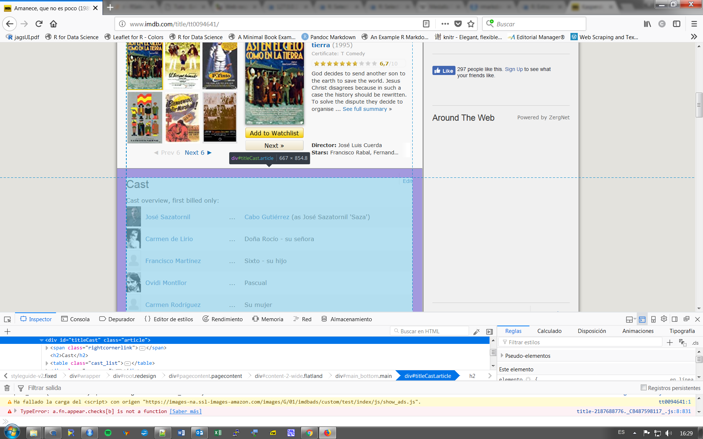

1 Scraping con R
1.1 Qué se puede “rascar” de la web?
“Si puedes verlo, puedes rascarlo”
Cualquier cosa en una página web:
- Tablas
- Texto
- Vínculos
- Metadatos (tiempo de publicación, actualización, …)
- Atributos de página web (colores, fuentes, tamaño de texto utilizado, ..)
- Imágenes
1.2 Formato HTML
El código HTML está compuesto de etiquetas predefinidas que le dicen al navegador cómo mostrar los datos. A menudo, estas etiquetas están anidadas:
<ul>
<li>Articulo 1</li>
<li>Articulo 2</li>
</ul>Dará:
- Artículo 1
- Artículo 2
La etiqueta “<ul>” indica una lista desordenada y “<li>” indica un elemento de la lista. Una etiqueta que comienza con una barra inclinada finaliza la etiqueta anterior de ese tipo.
HTML se vuelve más complicado, pero entender las etiquetas es suficiente para comenzar a rascar.
1.3 Identificar elementos de interés en una página
Puede ser útil ilustrar brevemente algunas prácticas para identificar elementos en una página de la cual uno desea extraer los datos. En este sentido, la mayoría de los navegadores web ofrecen no solo la posibilidad de ver el código fuente de una página, sino también analizar los elementos.
Esta función de inspección suele estar disponible directamente en el menú contextual del navegador. Se señala el elemento que nos interesa, se hace clic con el botón derecho y se elige el elemento del menú contextual que permite analizarlo.
Captura de pantalla de la pagina de IMDB dedicada a la película “Amanece que no es poco” 
Aquí hay una lista de criterios para la identificación de los elementos:
ID de atributo : si el elemento tiene un atributo id (caracterizado en el identificador con el carácter #), se supone que este atributo es exclusivo del elemento. Por lo tanto, es muy útil para extraerlo de la página, pero no es adecuado para extraer elementos recursivos (por ejemplo, varios párrafos), ya que cada uno debe tener una identificación única.
Clases : Las clases son una buena forma de identificar elementos recursivos en el mismo nivel jerárquico. Por ejemplo, los comentarios de blog a menudo comparten la misma clase (por ejemplo, class = “comment”). Para maximizar la probabilidad de identificar el elemento correcto, en el caso de que múltiples elementos en diferentes ubicaciones en la página tengan la misma clase, este criterio puede estar asociado con el nombre de la etiqueta (por ejemplo, div.comment).
Posición jerárquica : el análisis de elementos a menudo propone la posición relativa a la raíz del DOM ocupado por el elemento seleccionado. Se usa si las etiquetas nunca tienen atributos de identificación o clase.
1.4 El paquete rvest
Este paquete de “cosecha” extrae contenidos de páginas web en HTML/XML usando la sintaxis de los selectores de CSS. Por ejemplo, un párrafo que está directamente dentro de una etiqueta de tipo div puede identificarse usando la notación div > p.
Este paquete es bastante simple, porque no tiene muchas funciones, pero proporciona las principales características necesarias para la identificación y extracción de datos en una página, así como algunas funciones que permiten explorar las páginas emulando un navegador web.
1.4.1 Cargar la pagina
Para ilustrar el uso de rvest, vamos a extraer información sobre la película “Amanece, que no es poco” de su pagina en el IMDb.
require(rvest)
amanece <- read_html("http://www.imdb.com/title/tt0094641/")La función read_htmlpermite importar en R el contenido html de una página web. El argumento principal de esta función es la dirección de la pagina web ( o el path de fichero html local).
1.4.2 Extracción
La función html_nodes acepta dos argumentos, ambos necesarios:
html_nodes(x, css)- El argumento x representa el código HTML importado mediante la función
read_html - El segundo argumento es un criterio de selección que utiliza la gramática de los selectores de CSS.
Esta función devuelve una lista (matriz) de las ocurrencias encontradas en la pagina de acuerdo al criterio de selección. Así, el comando siguiente da la lista de las tablas incluidas en la pagina:
html_nodes(amanece, "table") ## {xml_nodeset (2)}
## [1] <table class="cast_list">\n<tr><td colspan="4" class="castlist_label ...
## [2] <table class="footer" id="amazon-affiliates">\n<tr>\n<td colspan="8" ...1.4.2.1 Extracción de texto
Se puede también extraer su titulo
titulo <- html_node(amanece, "title")
html_text(titulo)## [1] "Amanece, que no es poco (1989) - IMDb"Sólo hay una etiqueta “title” en una página, por lo que utilizaremos html_node() (sin la s final) en lugar de html_nodes(), porque sólo devuelve un elemento en vez de una lista.
La función html_text elimina todas las etiquetas del código y muestra solo el contenido textual. Una opción muy útil de esta función es trim = TRUE que elimina los espacios antes y después del texto.
Cabe mencionar, que mediante la gramática de “tuberias”, la secuencia anterior de comandos, puede ser expresada en una solo linea:
amanece %>% html_node("title") %>% html_text()Descargar el ultimo discurso del rey de España desde la siguiente dirección:
http://www.casareal.es/ES/Actividades/Paginas/actividades_discursos_detalle.aspx?data=5738
1.4.2.2 Extracción de tablas
La función html_table, como su nombre indica, está especialmente diseñada para extraer los contenidos de una tabla HTML, manteniendo la estructura en filas y columnas-
Así, el comando siguiente permite extraer la lista de actores de la película que viene en la segunda columna de la tabla con clase “cast_list”:
html_node(amanece, "table.cast_list") %>% html_table(header=TRUE) %>% .[[2]] # .[[2]] para segunda columna## [1] "José Sazatornil" "Carmen de Lirio" "Francisco Martínez"
## [4] "Ovidi Montllor" "Carmen Rodríguez" "Rafael Díaz"
## [7] "Amada Tercero" "Cassen" "Manuel Alexandre"
## [10] "María Ángeles Ariza" "Rafael Alonso" "Fedra Lorente"
## [13] "Cris Huerta" "Elisa Belmonte" "María I. González"Descargar las cotizaciones del IBEX 35 en tiempo real desde la siguiente pagina
ibex35 <- “http://www.bolsamadrid.es/esp/aspx/Mercados/Precios.aspx?indice=ESI100000000”
1.4.2.3 Extracción de vinculos
Para ilustrar este tipo de extracción, vamos a importar las direcciones de las paginas de los actores de la película. Empezamos importando todos los enlaces (etiqueta `<a>´de “ancla”) contenidos en una tabla:
enlaces <- html_nodes(amanece, "table a")
enlaces## {xml_nodeset (41)}
## [1] <a href="/name/nm0768574/?ref_=tt_cl_i1"><img height="44" width="32 ...
## [2] <a href="/name/nm0768574/?ref_=tt_cl_t1" itemprop="url"> <span clas ...
## [3] <a href="/title/tt0094641/characters/nm0768574?ref_=tt_cl_t1">Cabo ...
## [4] <a href="/name/nm0513922/?ref_=tt_cl_i2"><img height="44" width="32 ...
## [5] <a href="/name/nm0513922/?ref_=tt_cl_t2" itemprop="url"> <span clas ...
## [6] <a href="/name/nm1771790/?ref_=tt_cl_i3"><img height="44" width="32 ...
## [7] <a href="/name/nm1771790/?ref_=tt_cl_t3" itemprop="url"> <span clas ...
## [8] <a href="/name/nm0600120/?ref_=tt_cl_i4"><img height="44" width="32 ...
## [9] <a href="/name/nm0600120/?ref_=tt_cl_t4" itemprop="url"> <span clas ...
## [10] <a href="/name/nm1771909/?ref_=tt_cl_i5"><img height="44" width="32 ...
## [11] <a href="/name/nm1771909/?ref_=tt_cl_t5" itemprop="url"> <span clas ...
## [12] <a href="/name/nm0246717/?ref_=tt_cl_i6"><img height="44" width="32 ...
## [13] <a href="/name/nm0246717/?ref_=tt_cl_t6" itemprop="url"> <span clas ...
## [14] <a href="/name/nm1773519/?ref_=tt_cl_i7"><img height="44" width="32 ...
## [15] <a href="/name/nm1773519/?ref_=tt_cl_t7" itemprop="url"> <span clas ...
## [16] <a href="/name/nm0144107/?ref_=tt_cl_i8"><img height="44" width="32 ...
## [17] <a href="/name/nm0144107/?ref_=tt_cl_t8" itemprop="url"> <span clas ...
## [18] <a href="/title/tt0094641/characters/nm0144107?ref_=tt_cl_t8">Cura ...
## [19] <a href="/name/nm0018872/?ref_=tt_cl_i9"><img height="44" width="32 ...
## [20] <a href="/name/nm0018872/?ref_=tt_cl_t9" itemprop="url"> <span clas ...
## ...Luego extraemos las direcciones (atributo href) a las que apuntan dichos enlaces utilizando la función html_attr:
actores <- enlaces %>% html_attr("href")
raiz="http://www.imdb.com"
browseURL(paste(raiz,actores[1],sep="/")) #pagina de José Sazatornil